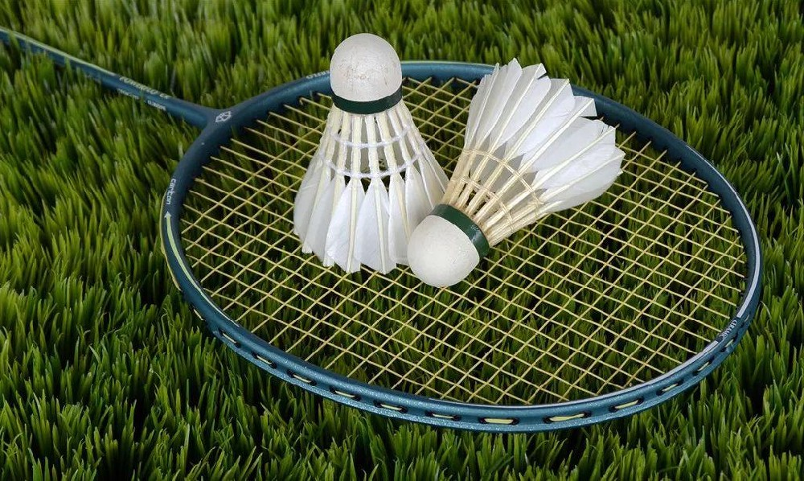
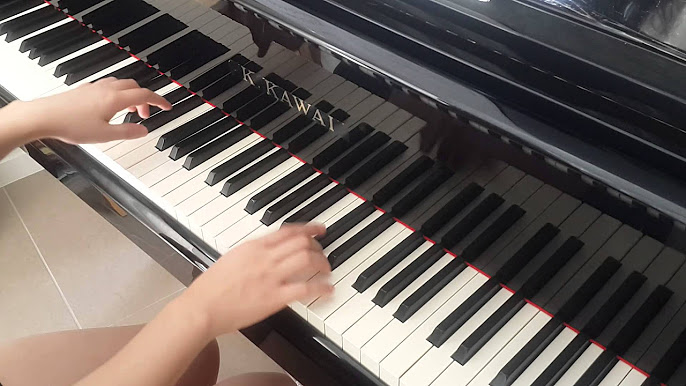
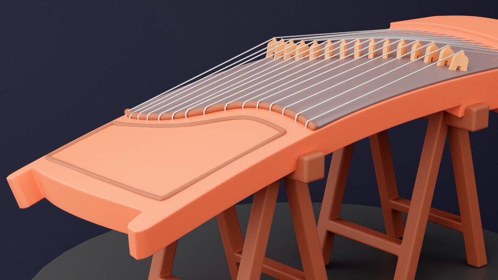
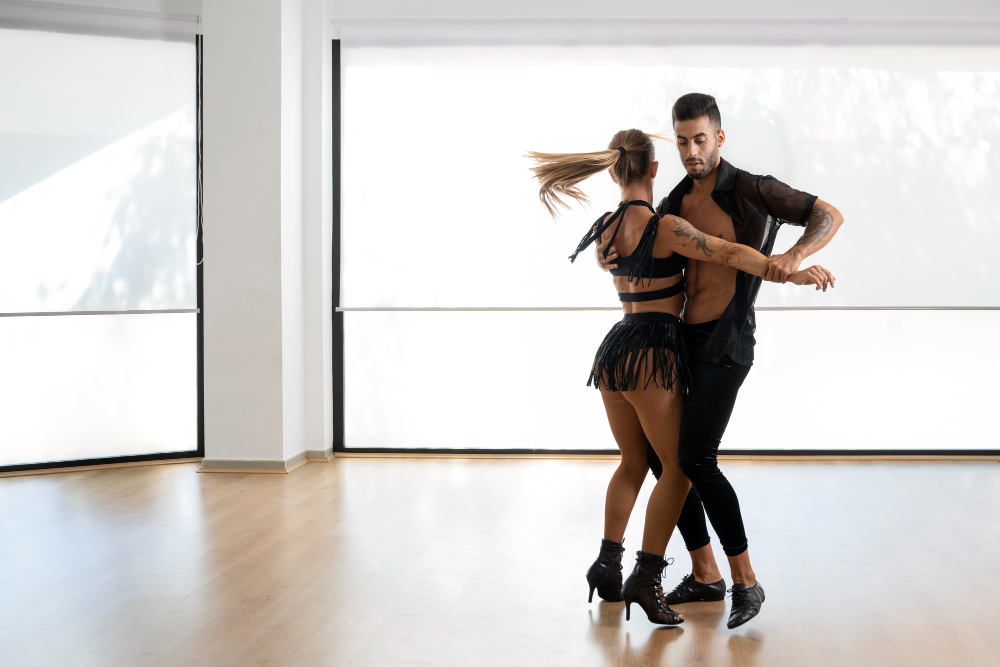

About me
1.Self Introduction
I am from China.
2.Hobbies
- I started professional badminton training in the third grade of elementary school and trained for five years.
- I began learning the piano at the age of six and completed the 10th-grade certificates from two music academies within five years.
- At the age of 10, I started learning the guzheng (Chinese zither) and completed the 10th grade within a year and a half.
- In addition, I enjoy jazz dance, listening to Kpop, and have studied Latin dance for two years.




3.Education
- 2024: University College London, London, UK
- 2021~2024: Northeast Yucai Foreign Language School, Liaoning, China
- 2018~2021: Northeast Yucai Foreign Language School, Liaoning, China